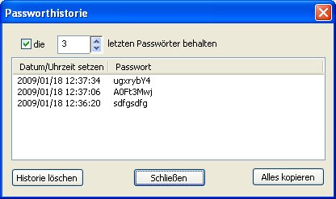

Mit Password Safe können sie die letzten paar Passwörter eines Eintrages festhalten, zusammen mit dem Datum wann es gesetzt wurde.
Dies ist nützlich um die Übereinstimmung mit Passwortrichtlinien, wie sie an einigen Stellen eingesetzt werden, nachzuweisen oder um Zurückzuschalten auf ein älteres Passwort, weil das jetzige Passwort -warum auch immer- nicht funktioniert. Die Passworthistorie kann erreicht werden mit der Taste "Passworthistorie" im Fensterdialog Eintrag bearbeiten.

Dieser Dialog stellt die letzten paar Passwörter für den jeweiligen Eintrag da. Um dies anzuzeigen drücke auf die Taste "Passworthistorie" im Eintrag bearbeiten/Einfügen Dialog. Folgendes kann gemacht werden:
Die N letzten Passwörter behalten
Wenn markiert, werden zu diesem Eintrag die angegebene Anzahl an letzten Passwörtern abgespeichert. Die spezifische Anzahl für diesen einen Eintrag kann hiermit festgelegt werden. Hinweis: Wenn sie die Markierung aufheben, wir die Historie nicht gelöscht. Es wird lediglich die weitere Abspeicherung von Passwörtern in Password Safe für diesen Eintrag angehalten.
Passwort kopieren
Wenn sie auf eine Zeile in der Liste der letzten Passwörter klicken, wird das Passwort aus dieser Zeile in die Zwischenablage kopiert.
Historie löschen
Wenn sie auf dieser Taste drücken wird die gesamte Passworthistorie dieses Eintrages gelöscht. Wenn keine Historie vorhanden ist, ist die Taste deaktiviert (ausgegraut).
Hinweis: der Eintrag wird erst geändert werden zum Zeitpunkt wann sie 'OK' in "Eintrag bearbeiten/einfügen" Dialog drücken. Wenn sie versehentlich auf "Historie löschen" gedrückt haben, drücken sie nicht auf 'OK' sonder auf 'Abbrechen'.
Alles kopieren
Wenn sie diese Taste drücken wird die gesamte Historie dieses Eintrages mit Datum und Passwort in die Zwischenablage kopiert.